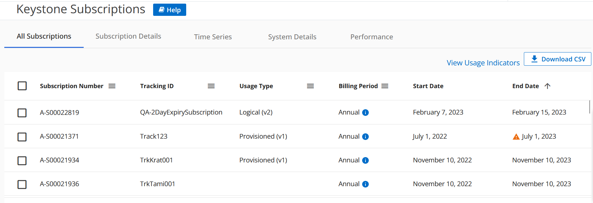
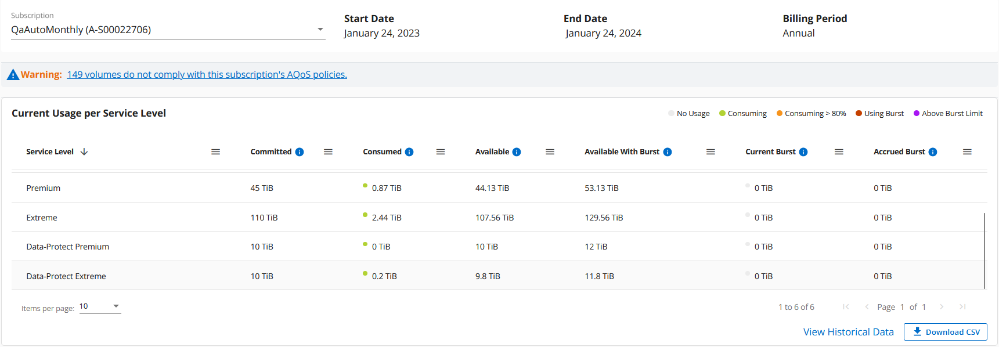
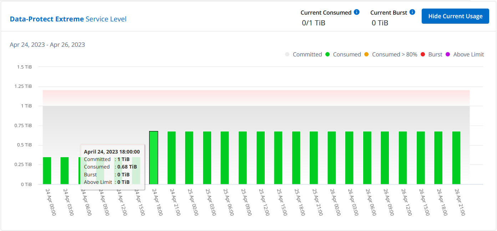
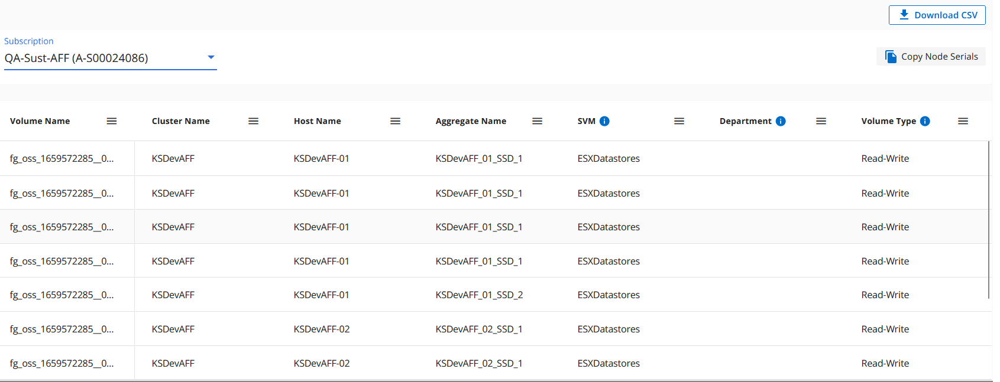
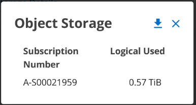
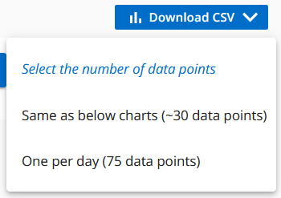
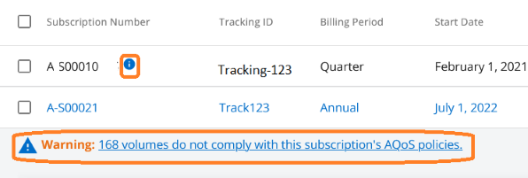

NetApp Keystone 服務
NetApp Keystone 服務
Keystone 的數位顧問儀表板和報告
 建議變更
建議變更
利用此功能（Digital Advisor）儀表板、您可以監控與您的訂閱有關的使用情況、並產生報告NetApp Keystone Active IQ Digital Advisor 。在訂購Keystone服務時、您可以在Digital Advisor儀表板上的* Keystone Subscriptions *（基礎概念訂閱）小工具上檢視訂閱與使用的詳細資料。

|
此處提供的資訊同時適用於ONTAP 整個過程StorageGRID 。相關章節已指出例外情況。 |
如需Keystone Digital Advisor小工具的相關資訊、請參閱 "透過NetApp Keystone 「View訂閱」檢視容量使用率"。
若要檢視 Keystone 訂閱和使用詳細資料、請執行下列步驟：
-
登入Digital Advisor。您可以查看 * 基礎概念訂閱 * 小工具、其中摘要說明您所購買 Keystone 服務的容量使用量。
-
在 * 基礎概念訂閱 * 小工具上、按一下 * 檢視更多詳細資料 * 、即可在 * 基礎概念訂閱 * 頁面上檢視磁碟區的使用詳細資料和警示。或者、請從左側導覽窗格移至*一般>基礎概念訂閱*。
每個服務層級的訂閱詳細資料、使用圖表及磁碟區詳細資料、會顯示在「基礎概念訂閱」畫面上的不同索引標籤中。
|
|
Keystone 訂閱的容量使用量會顯示在儀表板和報告的 Tibs 中、並四捨五入至兩位小數位數。如果使用量低於0.01 TiB、則該值會顯示為 0 或 No Usage。這些畫面上的資料會以 UTC 時間（伺服器時區）顯示。當您輸入查詢日期時、系統會自動將其視為 UTC 時間。
|
如需使用量計量的相關資訊、請參閱 "服務層級指標與定義"。如需Keystone中使用不同容量的相關資訊、請參閱 "Keystone 服務容量定義"。
訂閱
您可以在 * 訂閱 * 索引標籤中檢視訂閱清單。

您可以看到下列資訊。對於某些欄位和欄、您可能會看到資訊或警告圖示和工具提示、提供您有關資料的其他資訊。
-
訂閱編號：NetApp指派的Keystone訂閱訂閱的訂閱編號。
-
追蹤ID：訂閱啟動時指派的追蹤ID。這是每個訂閱和網站的唯一ID、用於追蹤訂閱。

如果您的訂閱已指派資料保護服務層級或費率方案、則工具提示可協助您識別 MetroCluster 設定中合作夥伴訂閱的追蹤 ID 。若要瞭解如何檢視 MetroCluster 組態中合作夥伴訂閱的詳細使用量、請參閱 "資料保護參考圖表"。 -
* 使用類型 * ：您可能已訂閱多個 Keystone （版本 1 ）或 Keystone STaaS （版本 2 ）訂閱。服務層級的費率計畫規則可能會因兩種訂閱類型而異。透過查看此欄中的值、您就知道使用類型是根據兩者的已配置或邏輯使用量計費
v1或v2。如需 Keystone STaaS 的詳細資訊、請參閱 "Keystone STaaS 文件"。 -
帳單期間：訂閱的帳單期間、例如每月、每季或每年。
-
開始日期：訂閱的開始日期。
-
結束日期：訂閱的結束日期。如果您有每月自動更新的計費月訂閱、您會看到
Month-on-month而非結束日期。根據這個日期、您可能會看到即將到期的訂閱資訊訊息、或附加了自動續約原則。 -
使用狀態：指出已使用或過度使用的訂閱量。如果您想要檢視最高使用量記錄、可以依此欄排序清單。
-
 ：按一下此圖示即可開啟 * 目前使用量 * 標籤、其中包含該訂閱的其他詳細資料。
：按一下此圖示即可開啟 * 目前使用量 * 標籤、其中包含該訂閱的其他詳細資料。 -
 ：按一下此圖示會開啟 * 容量趨勢 * 索引標籤、您可以在其中查看此訂閱所包含之每個服務層級的歷史使用資料。
：按一下此圖示會開啟 * 容量趨勢 * 索引標籤、您可以在其中查看此訂閱所包含之每個服務層級的歷史使用資料。
您可以參閱下列使用指標、查看每個訂閱的使用狀態：

 ：未記錄服務層級已認可容量的容量使用量
：未記錄服務層級已認可容量的容量使用量
 ：使用量正常、在承諾容量的80%內
：使用量正常、在承諾容量的80%內
 ：最大使用量、也就是使用量即將達到100%或以上的承諾容量。「已用」欄會針對超過承諾容量80%的任何使用量、顯示此指標
：最大使用量、也就是使用量即將達到100%或以上的承諾容量。「已用」欄會針對超過承諾容量80%的任何使用量、顯示此指標
 ：使用量在連拍限制之內。「尖峰消耗」是指服務層級100%承諾容量的耗用量、且在議定的高載使用量限制範圍內、例如120%
：使用量在連拍限制之內。「尖峰消耗」是指服務層級100%承諾容量的耗用量、且在議定的高載使用量限制範圍內、例如120%
 ：表示耗用量超過規定的突發量限制
：表示耗用量超過規定的突發量限制
目前使用量
若要瞭解訂閱的詳細資料、請按一下 * 目前使用情況 * 標籤、然後選取所需的訂閱號碼。

詳細資料、例如服務層級名稱、已提交、已耗用、可用容量、以及目前和預提的突發使用量、都會顯示在TiB中。
|
|
。 每一欄旁邊的圖示提供該欄的完整資訊。顯示記錄較高使用量的特定服務層級。您也可以檢視針對磁碟區所產生的警告和警示。 |
如需Keystone儲存服務和相關服務層級的相關資訊、請參閱 "服務層級"。
容量趨勢
「 * 容量趨勢 * 」索引標籤會顯示您在特定期間內 Keystone 訂閱的歷史資料。垂直圖表會顯示所選時間範圍的使用詳細資料、並提供適當的指標、供您比較和產生報告。
-
按一下 * 容量趨勢 * 標籤。
-
選取您要檢視其詳細資料的必要訂閱。您帳戶名稱中的第一個訂閱依預設為選取狀態。
-
如果您要檢視歷史資料並分析容量使用趨勢、請選取 * 容量趨勢 * 。如果您想要檢視已產生發票的歷史突發量使用資料、請選取 * 發票累計突發 * 。您可以使用此資料來分析發票上的帳單使用量。
檢視容量趨勢
深入瞭解
如果您已選取 * 容量趨勢 * 選項、請遵循下列步驟：
-
從*開始日期*和*結束日期*欄位的行事曆圖示中選取時間範圍。選取查詢的日期範圍。日期範圍可以是月份的開始日期、或是訂閱開始日期到目前日期或訂閱結束日期。您無法選擇未來日期。
為獲得最佳效能和使用者體驗、請將查詢的日期範圍限制為三個月。 -
按一下*檢視詳細資料*。每個服務層級的訂閱歷史使用量資料會根據所選時間範圍顯示。
長條圖會顯示服務層級名稱、以及日期範圍內該服務層級所耗用的容量。集合的日期和時間會顯示在圖表底部。根據查詢的日期範圍、使用圖表會顯示在 30 個資料收集點範圍內。您可以將滑鼠游標移至圖表上方、以檢視該資料收集點的已提交、已使用、突發量及突發量限制資料上方的使用量明細。

長條圖中的下列色彩代表服務層級中定義的耗用容量。圖表中的每月資料會以垂直線分隔。
-
綠色：80%以內。
-
黃色：80%- 100%。
-
紅色：暴增使用量（100%承諾容量達到議定的暴增限制）
-
紫色：超過連拍限制或
Above Limit。
|
|
空白圖表表示您的環境在該資料收集點沒有可用的資料。 |
您可以按一下切換按鈕 * 顯示目前使用量 * 、以檢視目前計費週期的使用量、突發量使用量及累積量資料。這些詳細資料並非以查詢的日期範圍為基礎。
-
目前已用：服務層級定義的已用容量（以TiB為單位）指標。此欄位使用特定色彩：
-
無色彩：突發或超過突發使用量。
-
灰色：無使用。
-
綠色：在承諾容量的80%以內。
-
琥珀色： 80% 的承諾用於突發容量。
-
-
目前爆發：在定義的突發量限制內或以上耗用容量的指標。在議定的連拍限制內的任何使用量、例如超過承諾容量的20%、均在連拍限制內。進一步的使用量會被視為超出連拍限制的使用量。此欄位顯示特定色彩：
-
無色彩：無突發使用量。
-
紅色：突發使用量。
-
紫色：超出連拍限制。
-
-
* 累積突發量 * ：目前計費期間每月計算的累計突發量或使用容量指標。應計的突發使用量是根據服務層級的已確認和已用容量來計算：
(consumed - committed)/365.25/12。
檢視已開發票的累積爆發
深入瞭解
如果您選擇了 * 已開票的累積突發 * 選項、依預設、您可以查看過去 12 個月內已計費的每月累計突發使用資料。您可以依過去 30 個月的日期範圍查詢。會顯示發票資料的橫條圖、如果使用量尚未計費、您會看到該月的 _待發 。
|
|
發票預提暴增使用量是根據服務層級的已提交和使用容量、根據每個計費週期計算。 |

此功能可在僅預覽模式中使用。請聯絡您的 KSM 以深入瞭解此功能。
資料保護參考圖表
深入瞭解
如果您已訂閱資料保護服務、您可以在 * 容量趨勢 * 索引標籤上檢視 MetroCluster 合作夥伴站台的使用資料分佈。
如需資料保護的相關資訊、請參閱 "資料保護"。
如果您的 ONTAP 儲存環境中的叢集是在 MetroCluster 設定中設定、則 Keystone 訂閱的使用量資料會分割成相同的歷史資料圖表、以顯示基礎服務層級的主要站台和鏡射站台使用量。
|
|
消費橫條圖只會分割為基本服務層級。對於資料保護服務層級、不會顯示此標界。 |
對於資料保護服務層級、總使用量會在合作夥伴網站之間分割、每個合作夥伴網站的使用量會以個別的訂閱方式反映並計費；這是一次主要網站訂閱、另一次則是鏡射網站訂閱。因此、當您在 * 容量趨勢 * 索引標籤上選取主要站台的訂閱號碼時、 DP 服務層級的使用率圖表只會顯示主要站台的個別使用量詳細資料。由於 MetroCluster 組態中的每個合作夥伴站台都會做為來源和鏡射、因此每個站台的總使用量都會包含在該站台建立的來源和鏡射磁碟區。
|
|
在「 * 目前使用狀況 * 」標籤中、訂閱的 tacking ID 旁的工具提示可協助您識別 MetroCluster 設定中的合作夥伴訂閱。 |
對於基礎服務層級、每個磁碟區都會在主要站台和鏡射站台上依資源配置收費、因此相同的長條圖會根據主要站台和鏡射站台的使用量來分割。
下圖顯示 _ 極致 _ 服務層級（基本服務層級）和主要訂閱號碼的圖表。相同的歷史資料圖表會以主要站台所用的顏色代碼較淺的陰影標記鏡射站台使用量。滑鼠游標上的工具提示會分別顯示主要站台和鏡射站台的消耗分佈（在 TiB 中）、分別為 1.02 TiB 和 1.05 TiB 。

對於 _ 資料保護極致 _ 服務層級（資料保護服務層級）、圖表如下所示：

當您檢查次要訂閱時、您會看到合作夥伴網站在同一個資料收集點的 _Extreme 服務層級（基礎服務層級）橫條圖反轉、而主要和鏡射網站的使用量分別為 1.05 TiB 和 1.02 TiB 。

對於 _ 資料保護極致 _ 服務層級（資料保護服務層級）、圖表會顯示在與合作夥伴網站相同的集合點：

如需 MetroCluster 如何保護資料的相關資訊、請參閱 "瞭MetroCluster 解資料保護與災難恢復"。
Volume 與物件
在 * Volume & Objects* 標籤上、您可以在 ONTAP 中檢視磁碟區的使用量和其他詳細資料。針對功能、此索引標籤會顯示節點及其在物件儲存環境中的個別使用情形StorageGRID 。
|
|
此索引標籤的名稱會因您站台的部署性質而異。如果您同時擁有磁碟區和物件儲存區、您可以看到 * Volume & Objects* 標籤。如果您的儲存環境中只有磁碟區、名稱會變更為 * Volumes * 。只要是物件儲存、您就可以看到 * 物件 * 索引標籤。 |
檢視 ONTAP Volume 詳細資料
深入瞭解
對於 ONTAP 、 * Volumes （磁碟區） * 索引標籤會顯示資訊、例如 Keystone 訂閱所管理儲存環境中磁碟區的容量使用量、磁碟區類型、叢集、集合體和服務層級。
-
按一下「* Volumes （*磁碟區）
-
選取訂閱編號。依預設、會選取第一個可用的訂閱號碼。
隨即顯示Volume詳細資料。您可以在欄之間捲動、並將滑鼠游標停留在欄標題旁的資訊圖示上、以深入瞭解這些欄。您可以依欄排序、並篩選清單以檢視特定資訊。
對於資料保護服務、會出現另一欄、指出磁碟區是 MetroCluster 組態中的主要磁碟區還是鏡射磁碟區。您可以按一下*複製節點序號*按鈕來複製個別節點序號。

檢視 StorageGRID 節點和使用量
深入瞭解
對於 StorageGRID 、此索引標籤會顯示物件儲存節點的邏輯使用量。
-
按一下 * 物件 * 索引標籤。
-
選取訂閱編號。依預設、會選取第一個可用的訂閱號碼。選取訂閱編號後、即會啟用物件儲存詳細資料的連結。

-
按一下連結、即可檢視每個節點的節點名稱和邏輯使用詳細資料。

效能
「 * 效能 * 」標籤可讓您檢視 Keystone 訂閱所管理的 ONTAP 磁碟區效能指標。
|
|
您也可以選擇使用此索引標籤。請聯絡支援部門以檢視此標籤。 |
-
按一下 * 效能 * 標籤。
-
選取訂閱編號。依預設、會選取第一個訂閱號碼。
-
從清單中選取所需的磁碟區名稱。
或者、您也可以按一下
在 * Volumes （磁碟區） * 標籤中的 Volume （ ONTAP 磁碟區）上的圖示、可導覽至此標籤。 -
選取查詢的日期範圍。日期範圍可以是月份的開始日期、或是訂閱開始日期到目前日期或訂閱結束日期。您無法選擇未來日期。
擷取的詳細資料是根據每個服務層級的服務層級目標而定。例如、尖峰 IOPS 、最大處理量、目標延遲和其他指標、都是由服務層級的個別設定所決定。如需設定的詳細資訊、請參閱 "服務層級"。
|
|
如果您選取 *SLO 參考線 * 核取方塊、則 IOPS 、處理量和延遲圖表會根據服務層級的服務層級目標呈現。否則，它們會以實際數字顯示。 |
橫式圖表上顯示的效能資料是每五分鐘間隔的平均值、並依照查詢的日期範圍進行排列。您可以捲動圖表、將滑鼠移到特定的資料點上、進一步深入瞭解收集的資料。
您可以根據訂閱號碼、 Volume 名稱和所選日期範圍的組合、來檢視和比較下列各節中的效能指標。詳細資料會依指派給磁碟區的服務層級顯示。您可以看到叢集名稱和磁碟區類型、也就是指派給磁碟區的讀寫權限。也會顯示與該 Volume 相關的任何警告訊息。
IOPS/TiB
本節會根據查詢的日期範圍、顯示 Volume 中工作負載的輸入輸出圖形。顯示服務層級的尖峰 IOPS 和目前的 IOPS （過去五分鐘內、非根據查詢日期範圍）、以及時間範圍的最小、最大和平均 IOPS （以 IOPS/TiB 為單位）。

處理量（ Mbps/TiB ）
本節會根據查詢的日期範圍、顯示 Volume 中工作負載的處理量圖表。顯示服務層級（ SLO Max ）的最大處理量和目前處理量（過去五分鐘內、並非根據查詢的日期範圍）、以及時間範圍的最小、最大和平均處理量（以 Mbps/TiB 為單位）。

延遲（毫秒）
本節會根據查詢的日期範圍、顯示 Volume 中工作負載的延遲圖表。會顯示服務層級（ SLO Target ）的最大延遲、以及目前延遲（過去五分鐘內、並非根據查詢的日期範圍）、以及時間範圍的最小、最大和平均延遲（以毫秒為單位）。
此圖表具有下列色彩：
-
淺藍色： _Latency 。這是實際延遲、包括 Keystone 服務以外的任何延遲。這可能包括額外的延遲、例如網路和用戶端之間的延遲。
-
深藍色： _ 有效延遲 _ 。有效延遲僅適用於您的 Keystone 服務與 SLA 相關的延遲。

已用邏輯（ TiB ）
此區段會顯示已配置的磁碟區容量和邏輯使用容量。目前的邏輯使用容量（過去五分鐘內、不是根據查詢的日期範圍）、以及時間範圍的最小、最大和平均使用量、都會顯示在 Tibs 中。在此圖表上、灰色區域代表已認可容量、黃色圖表則表示邏輯使用。

產生報告
您可以按一下「 * 下載 CSV* 」按鈕、從每個標籤產生及檢視訂閱詳細資料、時間範圍的歷史使用資料、以及每個標籤的 Volume 詳細資料： 
詳細資料會以CSV格式產生、您可以儲存以供未來使用。
在 * 容量趨勢 * 索引標籤中、您可以選擇下載查詢日期範圍的預設 30 個資料收集點或每日報告的報告。

-
容量趨勢 * 標籤的範例報告、其中會轉換圖形資料：

檢視警示
儀表板上的警示會傳送警示訊息、讓您瞭解儲存環境中發生的問題。
警示可分為兩種類型：
-
資訊：如為訂閱即將結束等問題、您可以看到資訊警示。將游標停留在資訊圖示上、即可深入瞭解問題。
-
警告：不符合法規的問題會顯示為警告。例如、如果託管叢集內有未附加調適性QoS（AQO）原則的磁碟區、您會看到一則警告訊息。您可以按一下警告訊息上的連結、在 * Volumes （磁碟區） * 標籤中查看不相容磁碟區的清單。
如果您已訂閱單一服務層級或費率方案、您將無法看到不相容磁碟區的警示。 如需AQO原則的相關資訊、請參閱 "計費和調適性 QoS 原則"。

請聯絡NetApp支援部門、以取得這些警示與警告訊息的詳細資訊。